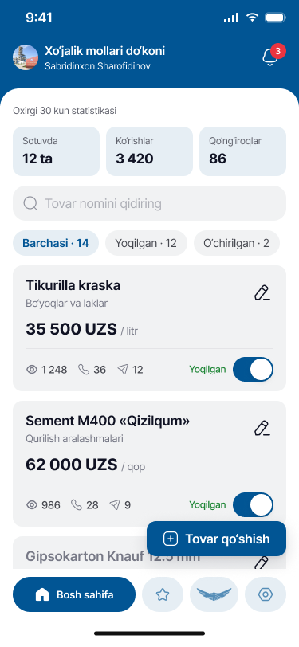
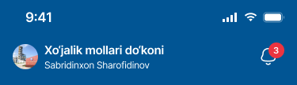
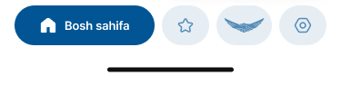

1 2 3 4 5| Oldingi | Optimal | |
|---|---|---|
| Balandlik | ≈1 290 px, scroll kerak | 812 px, scroll yo‘q |
| Statistika | Alohida blok | Sarlavha ichida |
| Tovar qo‘shish | Plitkalardan biri | Eng katta tugma |
| Kunlik ishlar | 3 ta qator, ≈190 px | 1 qator, ≈80 px |
| Menyu | 9 ta katta plitka | 8 ta ikonka + «Yana» |
| Tovarlar | 2 ta tovar + tugma | 1 ta qisqa karta |
| Ko‘rinadigan bo‘limlar | Ekranda ≈4 ta | Ekranda hammasi |